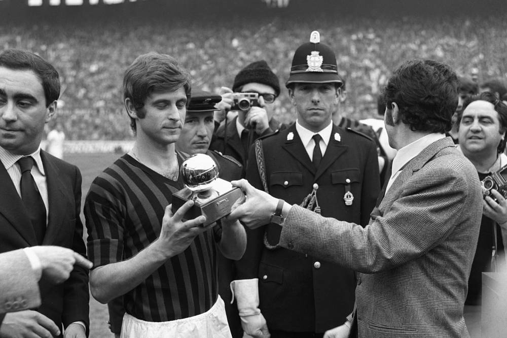
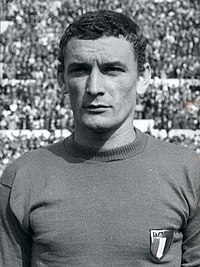

Gianni RIVERA - 1969

- Deuxième joueur italien à recevoir le Ballon d'Or : Gianni Rivera
Milanais de cœur, il remporte ce Ballon d'Or en 1969, à 26 ans
Nationalité : Italienne
Né le : 18 août 1943, à Valle San Bartolomeo (ITA)
Taille : 1,75
Poids : 68 kg
Poste : milieu
Clubs : US Alessandria (1953-1960) et Milan AC (1960-1979)
Palmarès de joueur : Championnat d'Europe des nations 1968 ; Coupe intercontinentale des clubs 1969 ; Coupe des champions 1963 et 1969 ; Coupe des Coupes 1968 et 1973. Championnat d'Italie 1962, 1968 et 1979 ; Coupe d'Italie 1967, 1972 et 1977 ; meilleur buteur du Championnat d'Italie 1973 (17 buts).
Bilan en club : 678 matchs, 169 buts
Bilan en équipe nationale : 60 sélections A, 14 buts (1962-1974)
Bilan en phase finale de Coupe du monde :4 participations (2e en 1970), 9 matches, 3 buts (1962-1974)
Palmarès Ballon d'Or : vainqueur en 1969 et (2e en 1963)
Classement du Ballon d’Or France Football 1969 :
Gianni Rivera (Italie / Milan AC),
83 pts.

Luigi Riva (Italie / Cagliari),
79 pts.
Gerd Müller (RFA / Bayern Munich),
38 pts.
Retour à l'accueil
 Gianni RIVERA - 1969
Gianni RIVERA - 1969